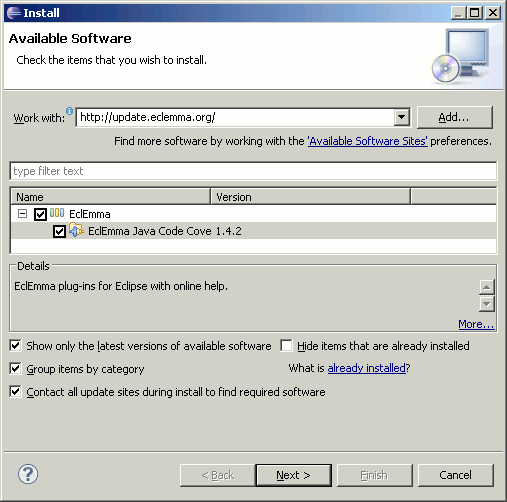
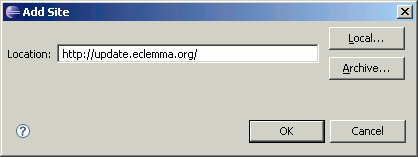
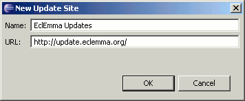

EclEmma ships as a small set of Eclipse plug-ins under the Eclipse Public License. The overall size of the three plug-ins is around 750 Kbyte. Like for all standard Eclipse plug-ins there are different installation options. Using the update site is the recommended procedure.
EclEmma requires Eclipse 3.1 or higher and Java 1.4 or higher. It has no dependencies on a particular operating system. Of course your Eclipse installation needs to contain the Java development tools (JDT) which is included in the default SDK installation.
Since Eclipse 3.6 the Eclipse Marketplace Client allows direct installation of EclEmma from within Eclipse:
1. From your Eclipse menu select Help → Eclipse Marketplace.
2. Search for "EclEmma".
3. Hit Install for the entry "EclEmma Java Code Coverage".
4. Follow the steps in the installation wizard.
The update site for EclEmma is http://update.eclemma.org/. Perform the following steps to install EclEmma from the update site:
1. From your Eclipse menu select Help → Install New Software...
2. In the Install dialog enter http://update.eclemma.org/ at the Work with field.

3. Check the latest EclEmma version and press Next
4. Follow the steps in the installation wizard.
The update site for EclEmma is http://update.eclemma.org/. Perform the following steps to install EclEmma from the update site:
1. From your Eclipse menu select Help → Software Updates...
2. On the Available Software tab press Add Site... and enter http://update.eclemma.org/ as location.

3. Check the EclEmma item and press Install...
4. Follow the steps in the installation wizard.
The update site for EclEmma is http://update.eclemma.org/. Perform the following steps to install EclEmma from the update site:
1. From your Eclipse menu select Help → Software Updates → Find and Install...
2. Check Search for new features and press Next.
3. Press New Remote Site... and enter http://update.eclemma.org/ for the update site URL:

4. Press Finish.
5. Follow the steps in the installation wizard.
For manual installation please download the latest EclEmma release. The downloaded archive contains these files:
features/com.mountainminds.eclemma.feature_x.y.z/* - EclEmma feature definitionplugins/com.mountainminds.eclemma.core_x.y.z.jar - Core implementationplugins/com.mountainminds.eclemma.ui_x.y.z.jar - User interfaceplugins/com.mountainminds.eclemma.doc_x.y.z.jar - Online help
Simply unzip the archive into your Eclipse installation and restart Eclipse.
Since Eclipse 3.4 the dropins folder is the right place for
additional plug-ins.
The installation was successful if you can see the coverage launcher in the toolbar of the Java perspective: